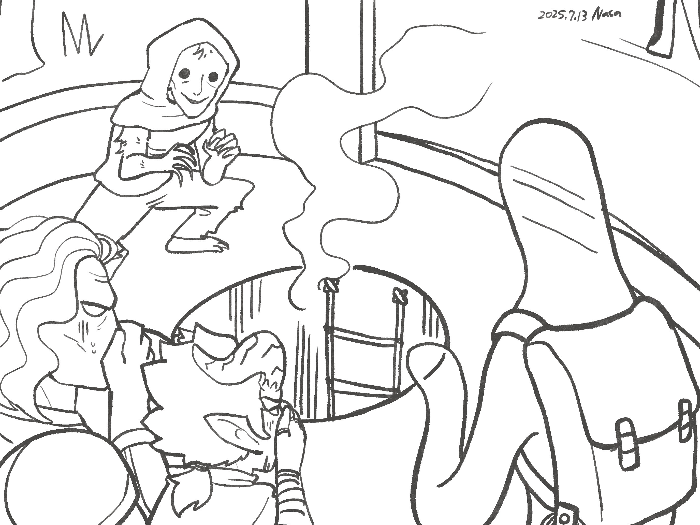

Chapter 1: Call of Fenadra
Seats of the Eclipse

Seats of the Eclipse
15051.10.15
Lott、Ubbo、Psyber 和 GoR 花了一個月左右的時間，從覆羽莊園，單純依著 Ubbo 的直覺，往他的出生地前進。而在抵達的前一晚，GoR 守夜時不留下任何消息地消失了。眼看目的地只需要不到一天的路程，Lott 和 Psyber 決定繼續跟隨著 Ubbo 前進。
雖然他們依然不知道自己為何要往這地方去，但他們知道必須要阻止 Ubbo 因為衝動幹下什麼蠢事。對月神 Phyneal 越加厭惡的 Lott，也只能在深夜時，透過在覆羽莊園撿到的面具試圖和愛神 Amoret 溝通。他也決心再一次相信自己的決定，與 Amoret 簽下了契約，成為了祂的契術師。另一方面，Ubbo 在夢中接收到了月神 Phyneal 的神諭，除了學習了新的力量外，在使用新的力量時，也展現了不同的樣貌。
在這個被稱為 Yarros（雅洛斯）的地區，Ubbo 終於看見了那座宗祠：當年他第一次與世界接觸的地方，也就是他的出生地。但如今破敗的小小宗祠，此刻似乎有個「客人」，鬼鬼祟祟地在裡頭。
冒險者們趨步向前，Ubbo 甚至大聲疾呼，詢問那人的身份。一名披著斗篷，毛髮鬆脫，似人似猴的生物歡喜地看著 Ubbo，直呼歡迎他回家。他自稱名為 Don，並逐一與冒險者們確認身份。此時，Ubbo 感到一股清晰明確的直覺，關於他在此出生的記憶：他感覺到，那股記憶似乎不是屬於他的記憶，而是被硬生生植入他腦中的記憶，令他感到古怪。Don 聽見冒險者們的介紹後，慌張的警告他們，超過一個音節的名字會讓他們陷入危險之中，因此，Lott、Ubbo 和 Psyber 分別以 Lan、Boe 和 Run 的單音節名字作為化名。
接著，Don 便將宗祠正中央的圓形孔蓋翻開，邀請冒險者們一起爬下這充滿著穢氣的地底世界：他們稱為「Fenadra（斐納札）」的地方，也是 Ubbo 真正出生的地方。
順著梯子向下，不確定過了多久，Don 和冒險者們終於碰觸到了地面。底下雖然光線不如地面，但由魔法點亮的環境，還是個運作機能十分完整的小城鎮。Don 在確保冒險者們一切安好後，便說著自己該趕去工作了，和冒險者們道別。
冒險者們不確定自己應該要做什麼，東張西望。這時，突然三聲的鐘聲響起，眼看所有居民都雙膝落地，Psyber 和 Ubbo 也應聲跪下，Lott 趕緊也跪了下來：雖然不知道 Psyber 和 Ubbo 為何如此自動地跟隨，Lott 不想當特別突出不一樣的人，也只好跟著做了。接著，當地人們口中開始誦著月神的禱詞，Ubbo 很開心的跟著念著，Psyber 和 Lott 則沒有跟隨。五分鐘後，居民們站了起來，彷彿什麼事都沒發生一樣，繼續忙於他們的工作。
Lott 看見居民們清一色穿著白色的衣服，但深淺不一，有的特別深而混濁，像是髒污一般，但也有潔白到快要可以反光的衣著。接著，他看見數名穿著純白鎧甲，疑似衛兵裝束的人，朝著他們走來。
衛兵確認了他們是「外來者」後，便拋給他們一人一件類似的衣服，要他們穿上。這些衣服顏色也是相對混濁的，但頂多就是灰色，稱不上黑色。三名冒險者們乖乖穿上後，被衛兵們喝斥要他們去工作，接著衛兵們就離開了。
冒險者們還摸不著頭緒，決定到處繞一下。Lott 看見了一間「溫室」，有些興趣，決定過去看看，卻發現剛才那幾名衛兵正圍在溫室前，而在他們正前方的，有幾名跪在地上發抖的人們。不過更有趣的，在這些衛兵身後，有一大批十來個平民，手拿磚頭，似乎正要襲擊他們。
Lott 不確定該怎麼做，於是決定先在附近找個牆邊躲起來，Ubbo 和 Psyber 則因為距離較遠，只能觀望而已。
一瞬間，一名「反叛者」掄起磚頭，一擊將一名衛兵敲暈，衛兵與平民之間的衝突就此發生。Lott 利用地利之便，朝向衛兵偷襲，射了一箭；Ubbo 衝向群眾，將自己的體型變大；Psyber 則還在猶豫該怎麼做。衛兵們說著他們眼前的「被懲罰者」因為違反了規則，需要被懲罰，原因是他們怠工，而且他們的判斷依據是這些人衣服的顏色。
「衣服會說話。」
Fenadra 衛兵
Ubbo 與 Lott 對這樣的「規定」感到不解，甚至他們也發現衛兵們只是聽命行事：到底規則是誰訂的、為什麼規則這樣合理，他們都不知道。在 Ubbo 將衛兵和平民們用他伸長的手隔開後，衝突暫時化解，而大家也都離開了，就好像剛剛什麼都沒發生過一樣。兩名被敲昏在地上的衛兵則被 Lott 綑綁手腳，被簡單問過話以後也就被冒險者們留在那裡。
Lott 還是對溫室挺有興趣的，因此帶著其他冒險者們走了進去。他們看見溫室內主要是種植菇類和其他食用植物。但其中有幾區，似乎種的是觀賞植物。在 Ubbo 詢問後，溫室的領班登記了他們的名字，讓他們在這裡工作。但因為他們剛來這裡工作，衣服顏色還很深，只能做最初階的工作：搬土。
冒險者們來到溫室後方，在該區域領班的指揮下，將土一批一批的搬往室內。Lott 試圖用魔法偷懶，還被領班喝斥。他們詢問領班今天的目標為何，得到的卻是「搬土到放飯」。
幾個小時後，清脆的鈴聲響起，冒險者們跟隨著其他工人一起走回溫室入口旁，從旁邊的門口走入大餐廳，享用晚餐：一大盆的土和一些乾草。Lott 和 Psyber 吃不下去（Psyber 還是忍著把乾草吃了，但是土他真的吃不下去），把他們的份送給了 Ubbo，他們之中唯一享受其中的人。
等大餐廳所有人吃完後，門打開了，大家依序往外走，排成隊伍一起離開。走了好一陣子，他們看見了這裡少數的高樓：好幾棟毫無設計感的方形建築。人們排隊依序走入大樓內。大樓門口的人員登記每個人的名字，並給予他們分別的房號（Ubbo 是 3-B、Psyber 是 3-C，而 Lott 是 4-A）。他們才得知這是他們今晚住宿的宿舍。
Ubbo 和 Psyber 入住後，決定在 Psyber 在房間內偷吃完自己攜帶的乾糧後，去四樓找 Lott。
當 Lott 也在他的房內吃乾糧時，敲門聲響起。他聽見了一個陌生的聲音，小心翼翼地開了門。一名看起來有點變異、神經兮兮的青年女子催促著他讓他進房間。Lott 不明所以，但還是讓這人進來了。
這名人類自我介紹名為 Tam Quorr，但他也特別警告，在這裡只能用單音節的名字。他同時也要求 Lott 供出自己的全名。Tam 解釋自己在地面上時是研究月神 Phyneal 的學者，為了得到更多資訊，才潛入這裡。但時間久了，自己已經變異到覺得自己再也回不去地面上了。
此時 Ubbo 和 Psyber 也來到了 Lott 房間，和 Tam 有了簡單的認識。Tam 和他們解釋了自己遊走在體制外的做法：雖然大家都被要求要工作，但其實沒有上工，也不會有人特別來捉捕他。同時他也解釋了衣服顏色的意義：一開始，大家衣服的顏色都是深色的，隨著累積「對月神的貢獻」，像是認真工作，或是有特別的功績，就能讓自己衣服的顏色變得更白。而 Tam 衣服的顏色可以說是黑到不能再黑了。
突然，Tam 頓了一下，提醒大家是晚禱的時間了，接著熟悉的重力感來襲。冒險者們不是被重力將膝蓋往地面拉，就是自動自發地跪了下來。Tam 和 Ubbo 熟練地唸出月神的禱詞，Lott 則一樣不情願。禱告結束後，Tam 建議大家都要學會月神的禱詞，不是為了真正的祈禱，而是不要被衛兵抓到任何反抗的把柄。
透過 Tam，冒險者們得知 Fenadra 分成了六個不同的地區，分別由不同的「議員」統治。而現在他們所處的「心空域（Realm of Hollow Heart）」正處於一個特別的狀態：「心空席」的議員似乎消失了，但議會刻意封鎖這個消息。對於這個空缺的職位，Ubbo 展現了些許的興趣，Tam 也表示規則上「人人有機會」，甚至衣服的顏色不影響大家得到這個席位的機會，但據說其他議員們分別有內定的人選。Tam 透露有個稱為「靈魂議會」的地區，是共屬於議員們的特別區域，可以到這裡找他們（不過他們只有工作時間會在該地區，放飯後都會各自回到他們領導的地區休息）。
Tam 提醒到，不同區域都會有各自的結界，而心空域因為現在沒有領導者，結界暫時失效了：這對冒險者們來說，是最沒有負擔的。Ubbo 提議明天白天一起往靈魂議會的方向前進，其他冒險者們也同意。
將其他人趕離自己房間後，Lott 準備休息，卻也發現他一直收在包包內的芒果鑽破了一個洞，溜走了。他回想起，芒果在他們下到 Fenadra 之前都還在，也表示了他對 Fenadra 的興趣。他推測，芒果很有可能偷偷溜了出去，而這讓他十分不開心。
15051.10.16
一早，Lott 在四樓的公共區域準備盥洗，也看見了 Tam。Tam 對他眨了一眼，Lott 也很清楚知道他們在外面最好不要讓別人知道他們互相認識這件事。整個 Fenadra 給他一種十分不舒服的感覺。
Ubbo 和 Psyber 一起來到 Lott 的房間，三人一起走到一樓。他們看見人們走入另一棟大樓，也跟隨進去，用了早餐。比起昨晚在溫室的晚餐，這餐是麵包，讓 Lott 和 Psyber 放心多了。Psyber 將麵包裝進背包內，他剛才在房間內已經先吃了乾糧，以免早餐還得吃土和乾草。
用完早餐後，人們排隊走出，紛紛往工作區域前進，冒險者們則脫隊，沿路詢問其他路人，得知要往靈魂議會，得往北方走。
突然，走在最前面的 Lott 感到腳步一沉。他想起昨晚 Tam 講到的不同地區結界一事。他們踏入了「不動域（Realm of Motionless）」，腳步變得沉重而緩慢，手也變得難以使力。
不過，左手邊在心空域與不動域的邊界，有個工廠般的地方引起了他們的注意。冒險者們走了過去，看見兩名衛兵守衛著。經過一番交涉，Ubbo 卸下了裝束，被允許進去裡面，但 Lott 和 Psyber 則不被允許入內，原因為「這是上頭的意思」，讓他們感到不解。
走入這座工廠，Ubbo 看見了看起來十分有設計感的櫃檯，裡面的人對他的表情都十分不自然，但也沒多說什麼。在櫃檯的允許下，他走入了後方的門內。左右手邊各有三扇門，裡面有躺在手術台上的小型電漿人、倉庫間、會議室等。最後，Ubbo 走入了正前方的雙開門。
映入眼簾的，是左右側分別數十個巨型的培養箱，裡頭的竟然是與 Ubbo 極為相似的電漿人，在培養液中載浮載沉。
而在走道的正中間是一座雕像。一名雙翼展開的天使人，雙手撫在胸前，遮掩著他已被挖空的心。